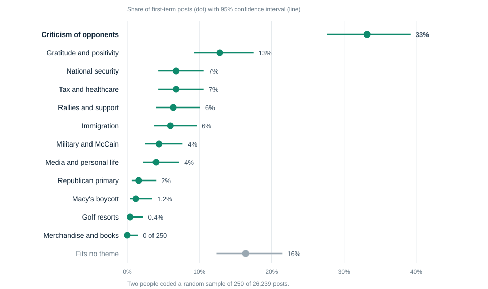
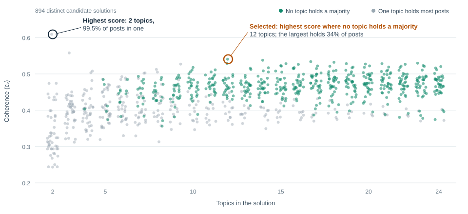
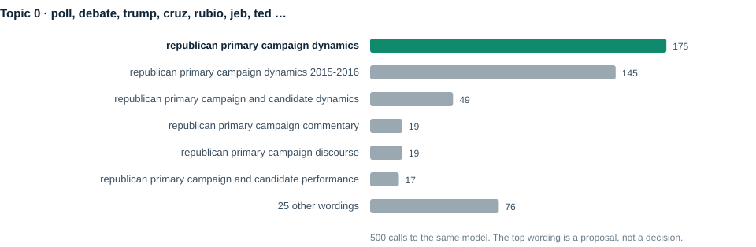
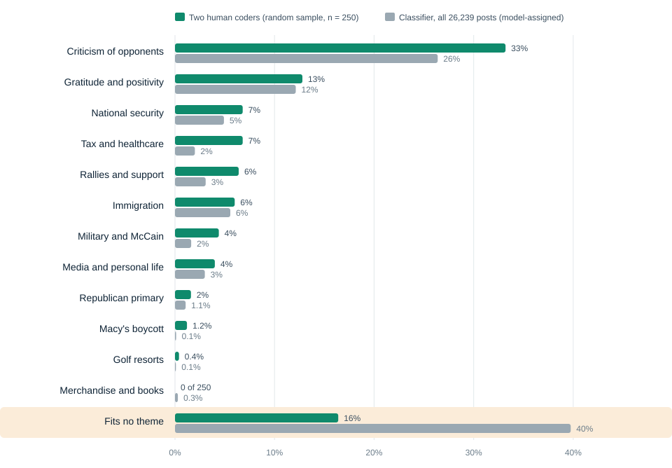

A tutorial, not a study · Donald Trump's Twitter account, 2015–2021
84% of Trump's first-term posts fit a theme found in his campaign.
From 250 randomly sampled posts coded by two people. 95% confidence interval, 79–88%.
We found themes in 7,805 posts from his campaign, June 2015 to Election Day 2016. Then we measured them in 26,239 posts from his first term, January 2017 to January 8, 2021, when the archive ends. One in three first-term posts criticized a political opponent.
What two human coders found

How we got that number, in five steps.
Machines did the counting. People made the decisions, each marked in amber. Two steps let you try it yourself with the live model.
Step 1 · Discover
The highest score was the wrong answer.
A topic model (BERTopic) grouped campaign posts by meaning. We tried 1,200 settings and scored each by coherence, a standard measure of whether a topic's top words belong together. The best-scoring solution had two topics, and one of them held 99.5% of the posts. That is a score, not a finding.

Half of the campaign posts (49.5%) didn't join any cluster. The clustering method leaves out posts it can't place confidently, so the 12 topics describe the other half. That is one reason step 4 matters.
A person decided: to read the posts behind the clusters instead of trusting the top score.
Step 2 · Name
The model proposes.
For each topic, we gave an LLM (GPT-4o) the topic's top words and asked for a name, 500 separate times. The most common answer becomes a proposal. Agreement ranged from 97% (a gratitude topic) down to 8% (golf resorts). Consistent answers aren't necessarily correct ones, so the model only proposes.

Name it yourself first.
Read a topic's words and five of its posts. Type the name you'd give it. Then ask the live model 20 times, and see what 500 votes and the two researchers decided.
A person decided: which name, if any, survives into the codebook.
Step 3 · Define
People decide.
Two researchers read the posts behind each cluster, in two passes. They kept all 12 as separate themes and wrote a codebook: what each theme means, what to include and exclude, and how to pick one theme when a post fits several. The oddities stayed in. Nobody tidied the result.
| Theme the researchers kept · cluster words | Campaign posts |
|---|---|
Republican Primary Campaign DynamicsMeaning: Related during the election to his republican opponents during the primary as well as specific reactions to debated.
Include: During the presidential era, this should generalize to broad criticism of other republicans or former allies.
Exclude: criticism of other opponents such as democrats
Examples and boundaries: "Marco Rubio is totally weak on illegal immigration &, in favor of easy amnesty. A lightweight choker - bad for #USA!" | 1,323 |
Immigration Reform and NationalismMeaning: Immigration reform is realted to any attack on Hispanic Migrants, proposed law changes, an all things related to the border wall. Nationalism associated with Donald Trump (often tied to his "America First" platform and the broader Trumpism and MAGA movement) centers on prioritizing national sovereignty, protectionist trade, and strict immigration controls over globalist frameworks
Include: Any MAGA or RNC slogans fit the nationalism flag.
Exclude: tweets that do not mention immigration, border security, nationalism, MAGA
Examples and boundaries: Flashback – Jeb Bush says illegal immigrants breaking our laws is an “act of love” http://t.co/p8yFzVuw8w He will never secure the border. | 758 |
Campaign Rallies and Support in Key StatesMeaning: During the election he promoted early reporting states (e.g., Iowa) heavily.
Include: This will generalize to his continued rally's during his presidential term.
Exclude: Discussion of events that are not political rallies / campaign events / promotional for his policies
Examples and boundaries: I will be in Indiana on Sunday and Monday at four MAKE AMERICA GREAT AGAIN rallies. See you there! | 577 |
Criticism of Political OpponentsMeaning: Attacks and critique of all percieved opponents
Include: Obama, Clinton, the media, Bush, Biden, China
Exclude: When he is not attacking or directing at opponents.
Examples and boundaries: "Crooked Hillary Clinton made up facts about me, and ""forgot"" to mention the many problems of our country, in her very average scream!" | 358 |
Media Appearances and Personal Life HighlightsMeaning: Largely promoting his media appearances and his family members
Include: Content related to self promotion, personal brand, etc.
Exclude: Irrelevant updates that are not promo or praise
Examples and boundaries: I will be interviewed on @foxandfriends tomorrow morning at 7:00. Enjoy! | 238 |
Terrorism, National Security Concerns, and Criticism of Previous AdministrationMeaning: Largely national security concerns related to the Middle East and Immigration at the southern border. A lot of this was associated with criticizing the Obama Administration
Include: When Terrorism, national security, and Obama's foreign policy is mentioned
Exclude: topics related to domestic / social issues
Examples and boundaries: Hillary won't call out radical Islam! She will be soundly defeated. | 198 |
Expressions of Gratitude and PositivityMeaning: This is a very broad and general theme that includes a lot of "follow up" messages following media spots, as well as shout outs.
Include: Positivity, thanksgiving, praise
Exclude: angry content, attacks, etc.
Examples and boundaries: HAPPY NEW YEAR &, THANK YOU! | 176 |
Tax and Healthcare PolicyMeaning: Theme is largely focused on his personal taxes, the Clinton's taxes, Obamacare, and other tax or healthcare policy.
Include: taxes, tax reform, obamacare, healthcare, medicare, medicaid, etc.
Exclude: irrelevant content
Examples and boundaries: 1. In interview I told @AP that my taxes are under routine audit and I would release my tax returns when audit is complete, not after election! |
2. I am going to repeal and replace ObamaCare. We will have MUCH less expensive and MUCH better healthcare. With Hillary, costs will triple! | 98 |
Issues related to Military Service and Criticism of John McCainMeaning: Policy issues related to the VA, military action in recent wars, and sharp critique of then-senator McCain.
Include: anything military related or related to McCain
Exclude: irrelevant content, content addressing other senators not related to military
Examples and boundaries: One of the reasons I am no fan of John McCain is that our Vets are being treated so badly by him and the politicians. I will fix VA quickly. | 83 |
Trump Campaign Merchandise and Book PromotionsMeaning: Viral promotion of his MAGA hats, yard signs, other campaign merch and his books.
Include: any campaign merch or books authored or signed by Trump
Exclude: non-campaign-related products
Examples and boundaries: I am signing copies of my book CRIPPLED AMERICA. Makes a great holiday gift. Order yours now! | 43 |
Macy's Boycott and Consumer RelationsMeaning: This is largely a 1-off theme related to a Macy's boycott. Minimally, other retail-related policy and some of his own merchandise promotion.
Include: Generalize to other retail related policy and to other consumer relation events
Exclude: foreign policy, taxes, healthcare... essentially anything not consumer-related
Examples and boundaries: Boycott @Macys, no guts, no glory. Besides, there are far better stores! | 42 |
Trump's International Golf Resorts and OpeningsMeaning: 1-off theme related to his specific Scottish Golf Resort that opened during the campaign
Include: Generalize to the promotion of other resorts, hotels, clubs, or Trump brand related.
Exclude: anything not related to Trump brand or Trump property
Examples and boundaries: The opening of Trump Turnberry in Scotland was a big success. Good timing, I was here for BREXIT. Very exciting news conference today! | 31 |
A person decided: 12 themes, their definitions, and the rule for choosing one, all before any first-term post was coded.
Step 4 · Check
The classifier scored 70%. The target was 85%. It failed.
Before choosing a classifier, we drew 250 first-term posts at random and set them aside. Two people coded each one with the codebook, separately, without seeing the model's answers. Then they resolved every disagreement together. The LLM classifier, chosen and frozen beforehand on a separate 100-post practice set, matched their consensus on 175 of the 250 posts: 70% (95% CI 64–75%). The target was more than 85%, with every theme found at least once. It missed on both counts.
The codebook is hard for people too. Before resolving their differences, the two coders agreed with each other on only 68% of posts. A classifier at 70% is roughly as consistent with them as they were with each other, which says the definitions are soft, not just the model.

Code five posts. Then meet the model.
Choose a theme for each of five first-term posts, using the codebook below. When you've coded all five, the live model codes the same five and you compare. Five posts is a feeling, not a measurement.
Open the codebook
A person decided: not to accept the classifier's numbers as measurements.
Step 5 · Report
The human sample is the finding. The classifier's shares are not.
We ran the failed classifier on all 26,239 first-term posts anyway, so you can see what the last step produces and how far off it is. Theme by theme, it mostly undercounts. And it sends 40% of posts to “fits no theme,” where the people put 16%.

If you adjust the classifier's output for the errors measured in step 4, 81% of posts fit a campaign theme, close to the human estimate. That adjustment rests on a 250-post error profile. It illustrates the gap; it isn't an estimate.
A person decides what to do next. For real research, you would revise the codebook, freeze a new classifier and test it on a fresh sample, repeating until it passes and the people accept its errors.
What this tutorial is and isn't.
It is a complete walk through the method on a familiar archive. It isn't a study of Donald Trump. The posts are archived posting events from one account, including retweets and posts written by staff, so the shares describe the account's activity, not public opinion or his personal authorship. The human coders' individual labels remain private; the published counts let you check every number here.
About the data
- One archive: 34,416 posts from June 16, 2015 to January 8, 2021 (CodeBreaker619, Kaggle, version 1). Each row is one post with its date, text, retweet and deletion flags.
- Campaign view for discovery: 7,805 posts, June 16, 2015 – November 8, 2016. 26 became empty after cleaning, leaving 7,779.
- First-term view for measurement: 26,239 posts, January 20, 2017 – January 8, 2021. The archive ends before the term did.
- The 372 posts between Election Day and the inauguration are in the archive but in neither view.
- The archive can't prove it is complete. Text is © its original authors and isn't relicensed by this project.
- Download the corpus (CSV) · Data card
Every number on this page, as files
- Human-sample shares
- Held-out check
- Practice-set comparison
- Frozen codebook
- Topic-to-theme map
- Selection rule, applied
- All 1,200 candidates
- Naming votes
- Classifier counts
- Decision to run anyway
- Everything, zipped
Recompute them yourself, with no private data or API calls: python scripts/check-published-metrics.py and python scripts/estimate-human-sample-prevalence.py.